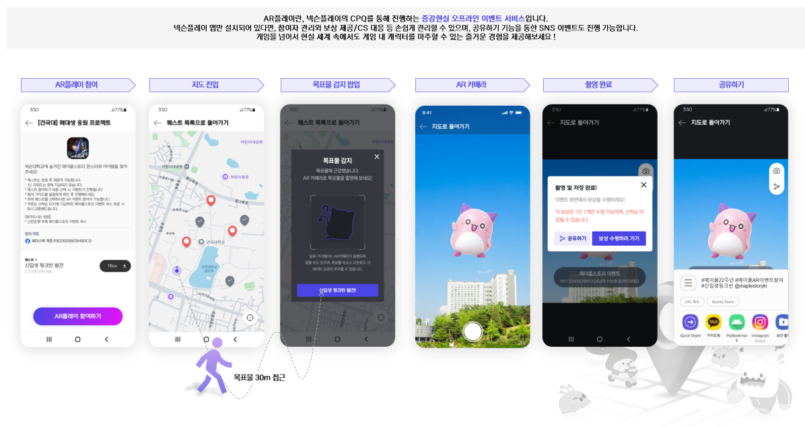
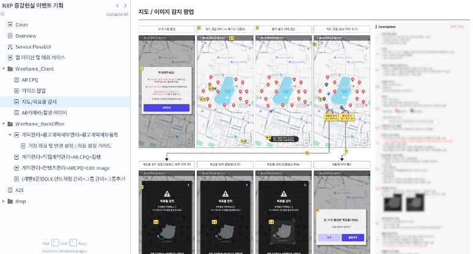

Project 04 · 0-to-1 · OMO Solution
위치인식 기반 AR 오프라인 이벤트 솔루션 'AR플레이'
개요
게임 오프라인 행사에서 포켓몬 GO와 같이, 현실 속에서 넥슨의 몬스터를 잡을 수 있는 넥슨플레이 AR 이벤트 페이지를 기획해 유저 인터랙티브 콘텐츠를 제공함으로써 흥미와 체류율을 확보.
문제
- 오프라인 행사의 일회성 유저 참여를 넘어, 디지털 앱과 연동된 지속적 흥미를 이끌어낼 인터랙티브 콘텐츠 필요
- 사내 다양한 행사에서 재사용할 수 있는 범용 솔루션으로 구축되어야 운영 효율성 확보 가능
가설
게임 IP + AR 기술의 '포켓몬 GO'식 게이미피케이션을 도입하고 이를 사내 범용 솔루션으로 만들면, 다양한 행사의 운영 효율을 극대화할 수 있을 것이다.
기여
- AR 페이지 기획 — GPS + 카메라 연동, 행사장 곳곳에 숨겨진 넥슨 캐릭터 탐색 / 포획 페이지 설계
- 체류율 증대 장치 — 특정 구역 방문 유도 + 포획 몬스터 수에 따른 넥슨플레이 포인트 보상 체계 설계
- 기술 제약 극복 — GPS 조작(Fake GPS) 방지 기술 검토, 루팅 기기 제어 정책으로 공정한 이벤트 환경 조성
- 백오피스 솔루션화 — 위 / 경도 입력으로 정확한 위치에 캐릭터 배치, 노출 반경(미터 단위)으로 난이도·밀집도 조절
- 스킨(Skin) 시스템 — 메이플스토리 · 마비노기 등 다양한 IP가 범용 활용 가능하도록 포획 버튼 디자인 / 문구 / 이펙트를 BO에서 자유롭게 변경
- MP4 캐릭터 에셋 업로드 지원 — 생동감 있는 3D / 2D 애니메이션 연출 가능
Impact
- 단순 방문객을 적극적 참여자로 전환시키는 OMO(Online Merges with Offline) 경험 구축
- 기능 제품화 → 런칭 이후 9개 대학교 + 제주공항에서 오프라인 서비스로 상용화
- 사내 다양한 IP가 즉시 활용 가능한 범용 이벤트 솔루션 자산화
Reflection
"한 번 만든 기능을 솔루션으로 만든다"는 시각이, 단발성 이벤트와 지속적 자산의 차이를 만든다는 것을 확인.
사용자 플로우
AR플레이란, 넥슨플레이의 CPQ를 통해 진행하는 증강현실 오프라인 이벤트 서비스입니다. 넥슨플레이 앱만 설치되어 있다면, 참여자 관리의 보상 제공/CS 대응 등 손쉽게 관리할 수 있으며, 공유하기 기능을 통한 SNS 이벤트도 진행 가능합니다. 게임을 넘어서는 현실 세계 속에서도 게임 내 캐릭터를 마주할 수 있는 즐거운 경험을 제공해보세요!

AR플레이 6단계 플로우 — 참여 → 지도 진입 → 목표물 감지 팝업 → AR 카메라 → 촬영 완료 → 공유하기. GPS + 카메라 · Fake GPS 방지 · 보상 체계 · 공유 인센티브를 한 번에 구현한 OMO 경험.
기획서 · 와이어프레임 예시

'지도 / 이미지 감지 팝업' 와이어프레임 — 캐릭터 위치 접근 시 감지 팝업 → AR 카메라 진입 → 포획 성공/실패 분기까지의 화면 흐름과 케이스별 예외 처리를 Axure로 직접 설계.